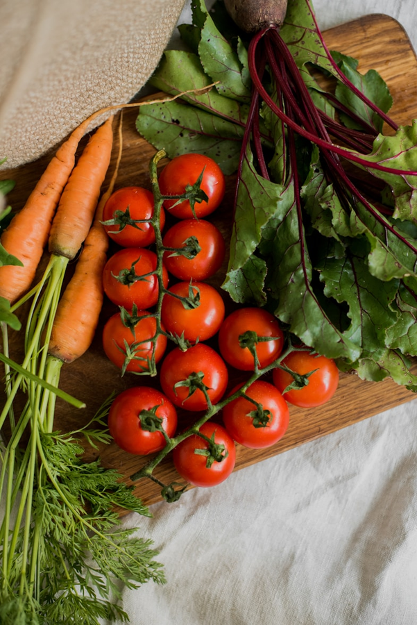
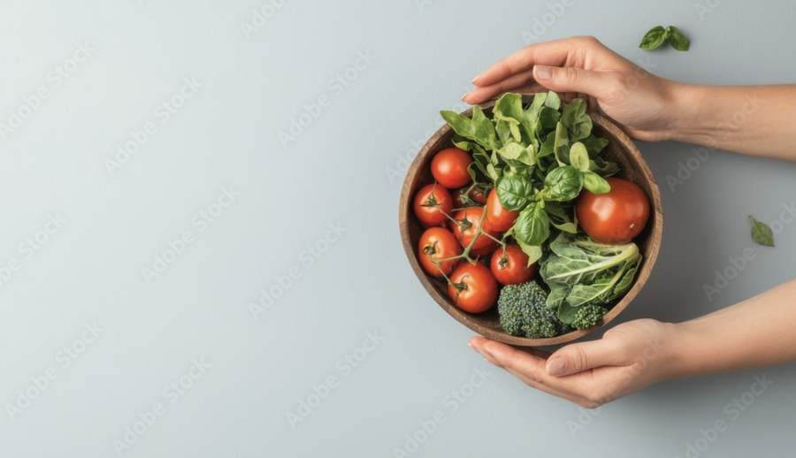
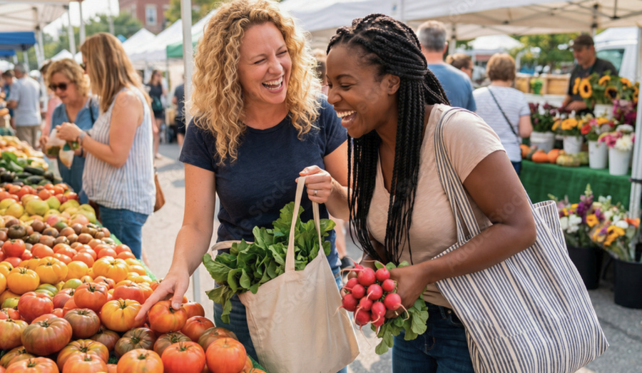

Healthy Ecosystems explores how everyday choices connect our environment, local economies, and community health.


Our mission is to reveal how everyday choices connect our environment, local economies, and community health to build a more sustainable, equitable future.
Understand how everyday purchases affect natural resources, emissions, and the environment.
Explore how spending choices support local businesses and shape the economic well-being of communities.
Discover how purchasing decisions connect to health, well-being, and thriving communities.

Every community faces different challenges. Understanding the connections between economic opportunity, public health, and environmental stewardship can help communities identify more equitable solutions.
Explore the connections behind your everyday choices and discover your impact on a healthier, more sustainable future.
Explore Demo